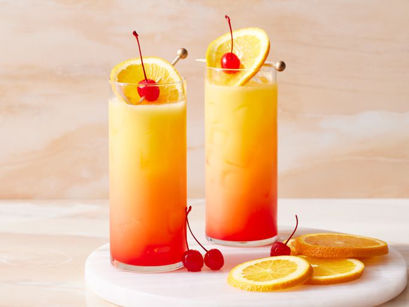

Tequila Sunrise Cocktail

Description
A tequila sunrise cocktail has a sunrise-like appearance making it a
welcome option any day! Garnish with an orange slice and a cherry if you
like.
Ingredients
- 2 1/2 cups ice, divided
- 4 fluid ounces orange juice
- 2 fluid ounces tequila
- 3/4 fluid ounce grenadine syrup
Steps
- Gather the ingredients.
- Fill a highball glass with 1 1/2 cups ice and set aside.
-
Combine orange juice and tequila in a cocktail shaker; add remaining 1
cup ice. Cover and shake until the outside of the shaker has frosted.
- Strain into the prepared highball glass.
- Slowly pour in grenadine and let settle.
- Garnish and stir before drinking.